This tutorial will cover data collection from OSM to importing in Rhino.
The process will require the use of JOSM and QGIS. Use the latest version of both.
After both are installed, open JOSM and click on the green arrow on the top left.
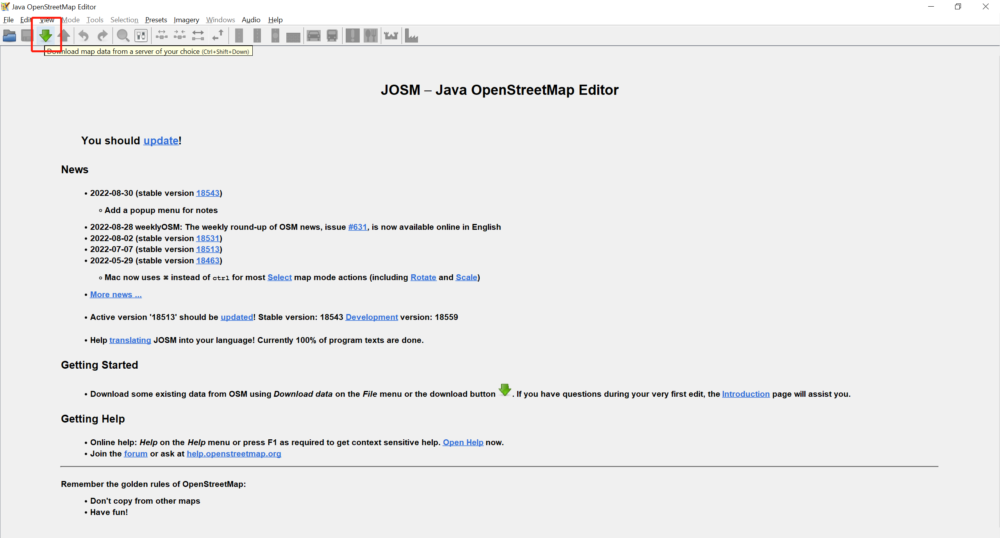A popup with a map will open, navigate to the desired area and drag over the map to select a region to download. Area selections are limited to 50,000 nodes and will fail if the area contains too many. (nodes include everything from buildings to stop signs, trees, etc.) Due to the limited area of the seleciton, the process will need to be repeated until the extent of the city is reached.
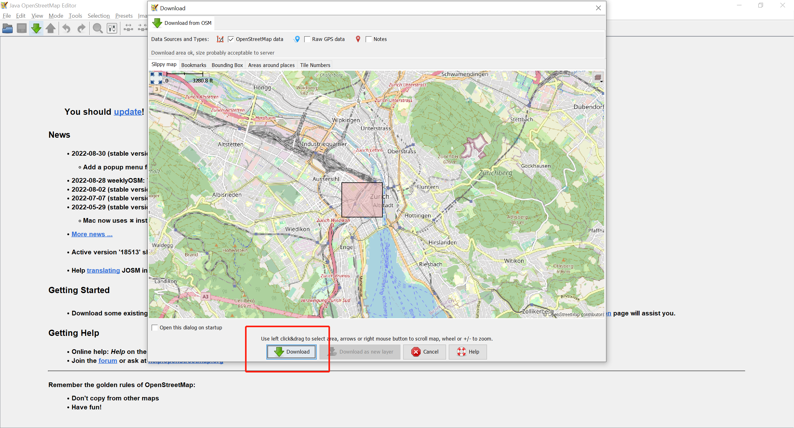After the city basemap is collected, the roadmap will need to be seperated for extraction. Nagivate to the search on the right.
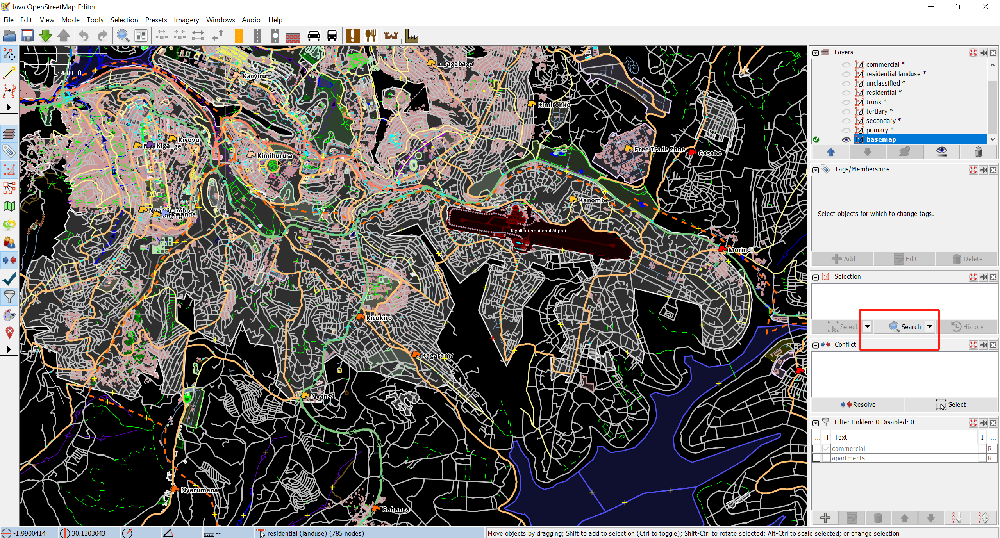For our purposes, we need to collect and seperate the layers listed below. Search for each in the "presets" search bar. All non-landuse presets should be structured as Highways/Streets/--- and landuse should be structured Geography/Land Use/---
Press search, after a short moment the preset will be searched and selected in red, copy the selection with control "c". Click "file" in top left and then "new layer".
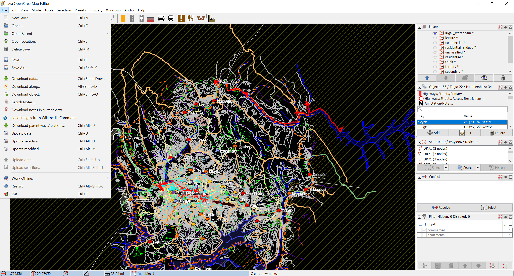After moving to the new layer (layer should have a green tick) paste the content into the layer. Sometimes the pasted objects may be misaligned, move the object back into place by dragging as best as possible. Repeat until all layers are collected
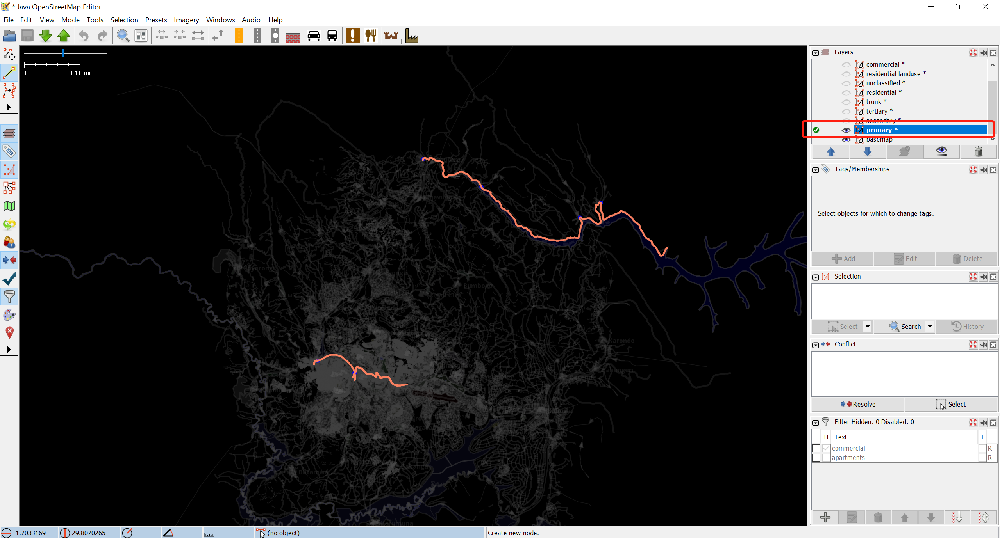Right click on the layer and click save (don't use control "s") and save the file as an OSM file.
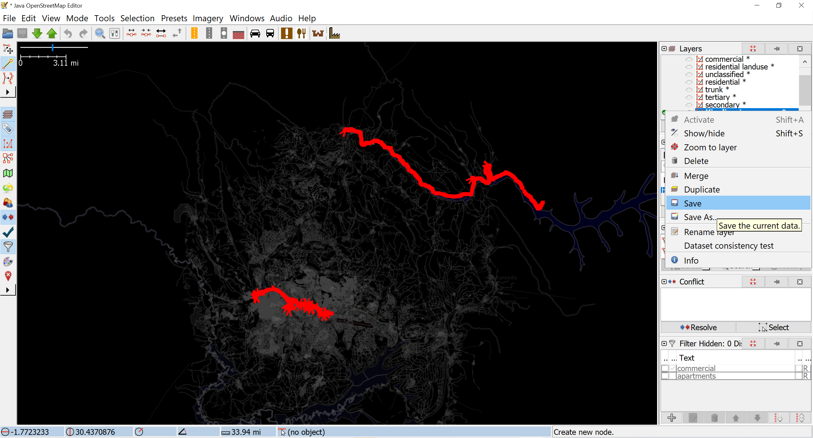Finally, to save the JOSM session, press control, shift, alt, "s" and click save as.
Due to issues with importing, OSM files could not be imported directly into Rhino using Elk, we instead will use QGIS to conver to a .DXF file type
Open QGIS and drag the saved OSM file into the workspace. After opening, right-click on the line layer with the same color and navigate to export, save as.
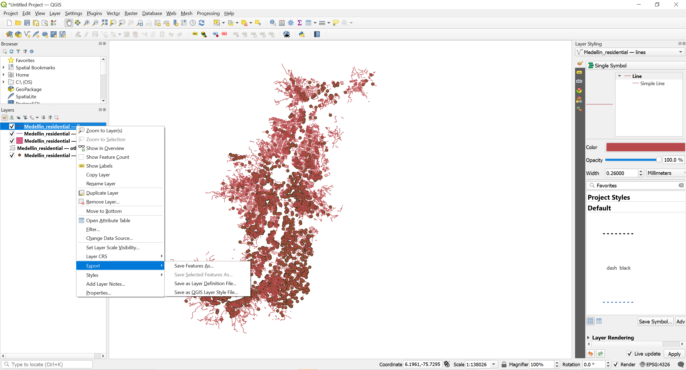Change the file type to AutoCad DXF and click ok. This file could now be imported directly into Rhino, the vertical scaling will likely be misaligned and will need to be adjusted in rhino.
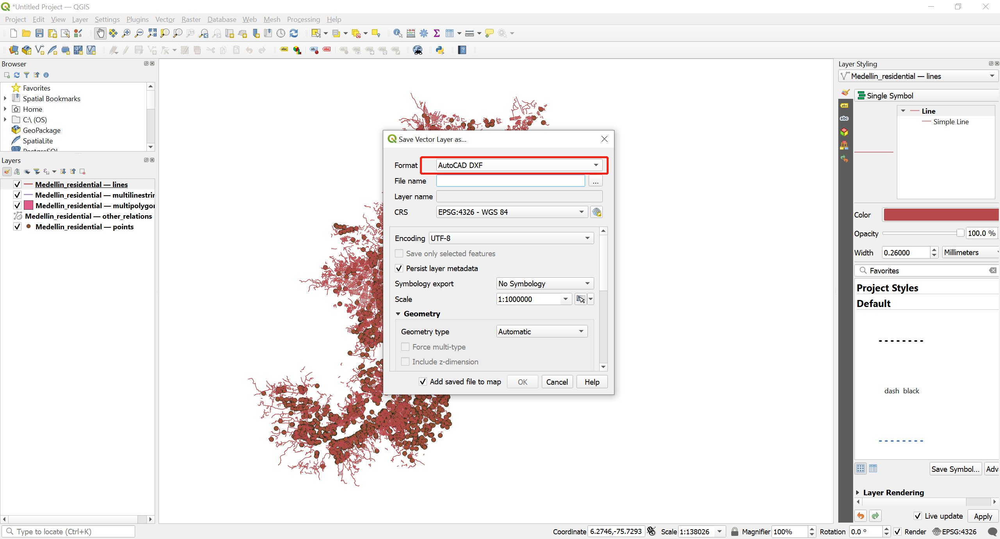We will also need the topography for the respective cities, for the STRM basemap we will use USGS. Before we can download any map data we will first need an account (top right).
After using the map interface to navigate to the desired area, click the "use map" button

Navigate on the top left bar to "Data Sets", drop down "digital elevation" and tick "STRM 1 Arc-second global".

Scroll to the bottom and click "results"

Preview the STRM area by clicking the foot icon. Select the appropriate sections and then click the download icon.

Dowload the BIL 1 Arc-second option.
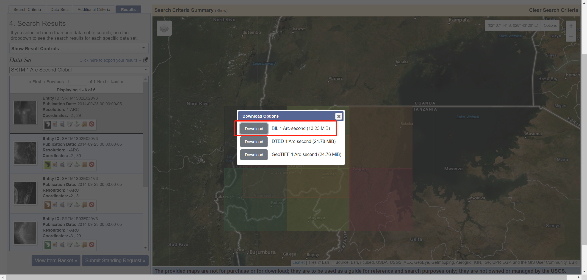After the file is downloaded, extract the file and drag the .bil file into the QGIS workspace, this should produce a black and white basemap.
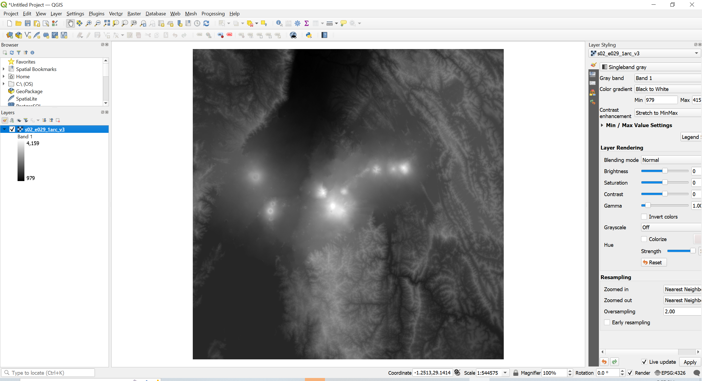Navigate to "Raster", "Extract", "Contours"
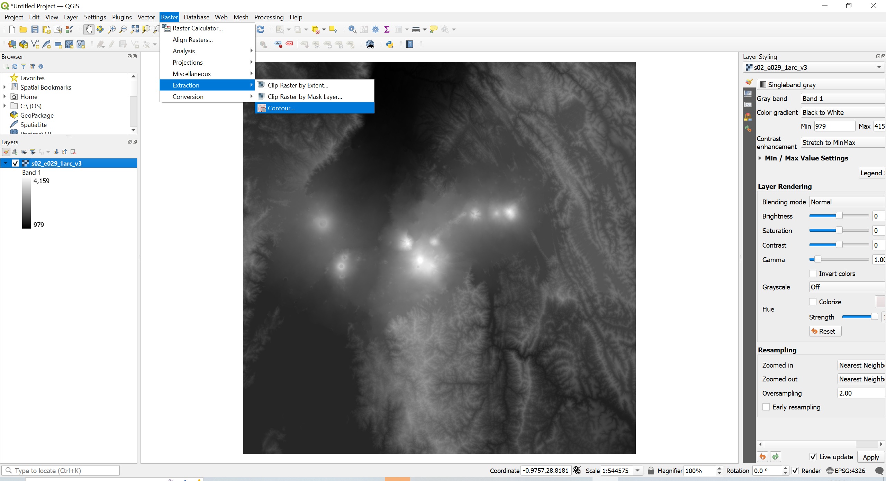Adjust the export settings, interval between contour lines should be near 10 (refer to existing drawings for density reference). For coastlines, repeat the same process but set "interval betwen contour lines" to 5000 and "offset from zero relative to which to interperet interval" to 0.1
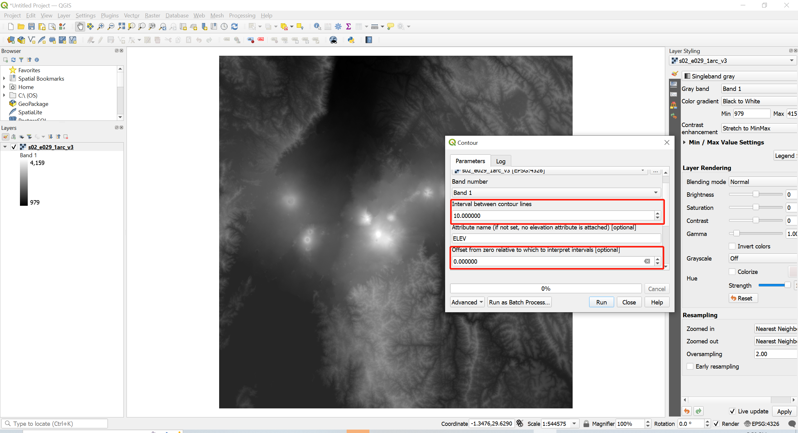After the extraction is complete, right click the layer and export as DXF as done before, these contours could now be imported directly into rhino.